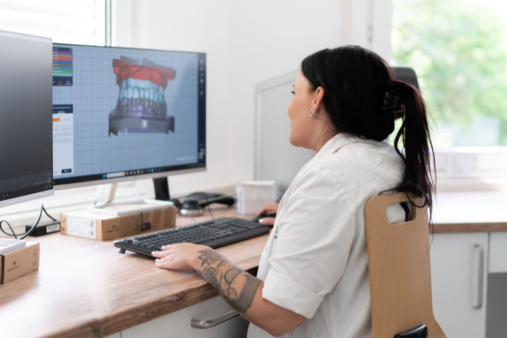
Digitaler Workflow
Vom Intraoralscan zu gedruckten Arbeitsmodellen, individuellen Abutments und gefrästem Zahnersatz: alles inhouse. Zur Detailseite
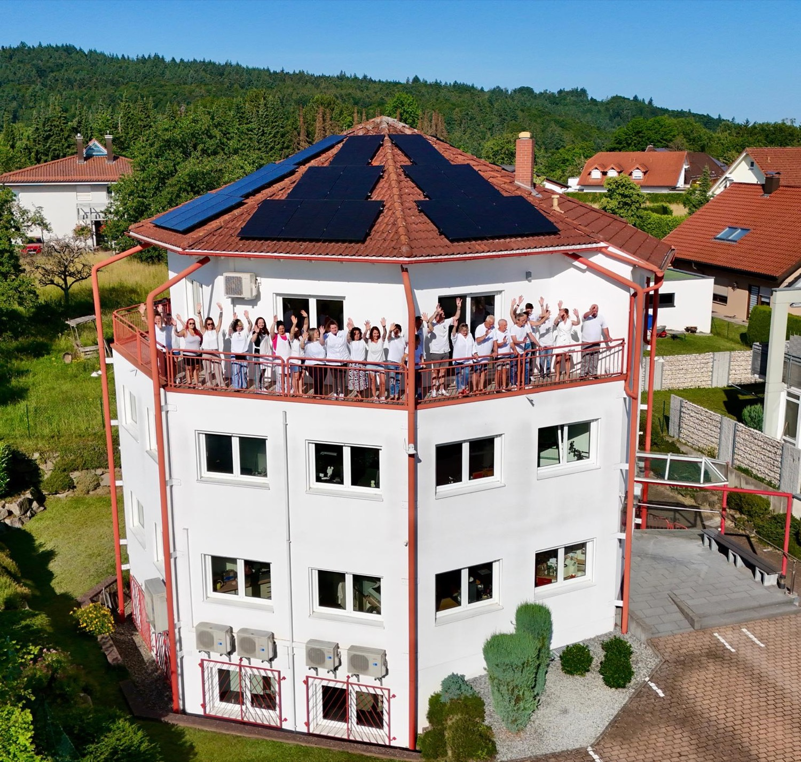
Seit fünf Jahrzehnten begleiten wir Zahnarztpraxen mit hochwertiger Zahntechnik, persönlicher Beratung und zuverlässigem Service. Digital, präzise und termintreu.
Von der digitalen Planung bis zur fertigen Versorgung entstehen bei KIEFER zahntechnische Arbeiten, die Präzision, Ästhetik und zuverlässige Abläufe verbinden. Alles entsteht komplett im Haus, ohne Auslagern.

Vom Intraoralscan zu gedruckten Arbeitsmodellen, individuellen Abutments und gefrästem Zahnersatz: alles inhouse. Zur Detailseite
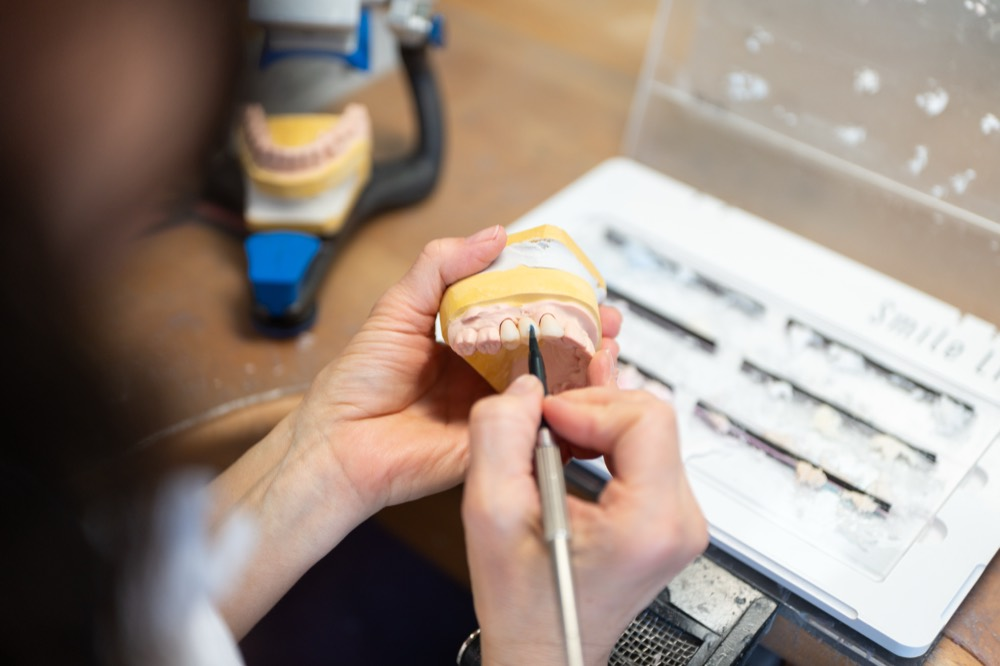
Kronen, Brücken, Inlays, Veneers sowie Implantatkronen und -brücken. In Zirkon mit individueller Schichtung, Vollzirkon, e.max, Hochgold, NEM oder Titan. Zur Detailseite
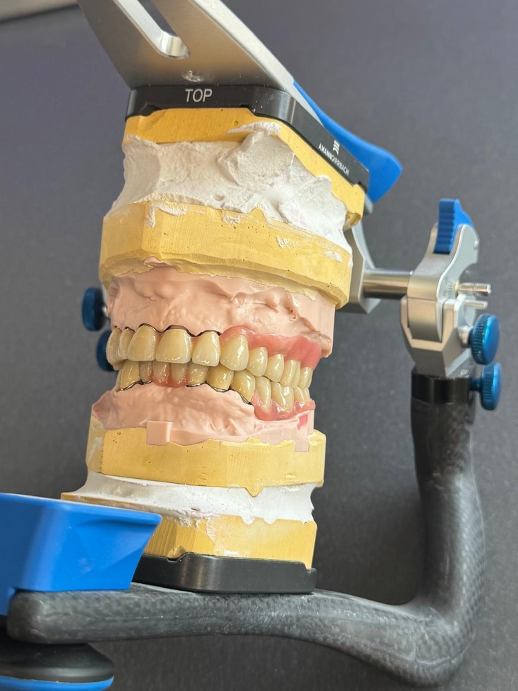
Teleskope aus NEM, Titan, Zirkon oder PEEK, auch auf Implantaten. Dazu Locator-, Steg- und Geschiebearbeiten, Modellguss, Flex-Prothesen und individuelle Totalprothetik. Mit 10 Jahren Garantie auf die Friktion bei NEM-Teleskopen. Zur Detailseite
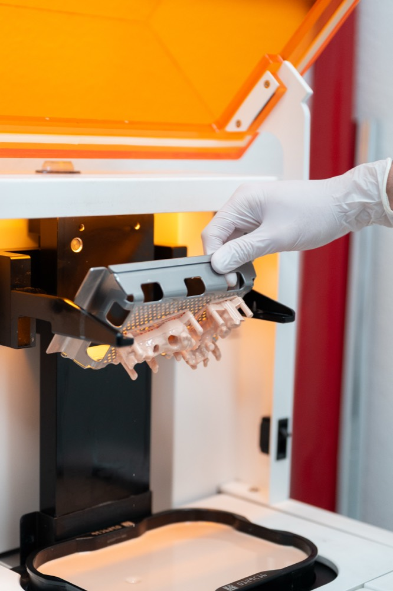
Gefräste Aufbiss-, Michigan-, Tanner- und Knirscherschienen, Schnarcher- und Protrusionsschienen (TAP), Retentions- und Münchnerschienen, Bohrschablonen sowie herausnehmbare KFO. Zur Detailseite
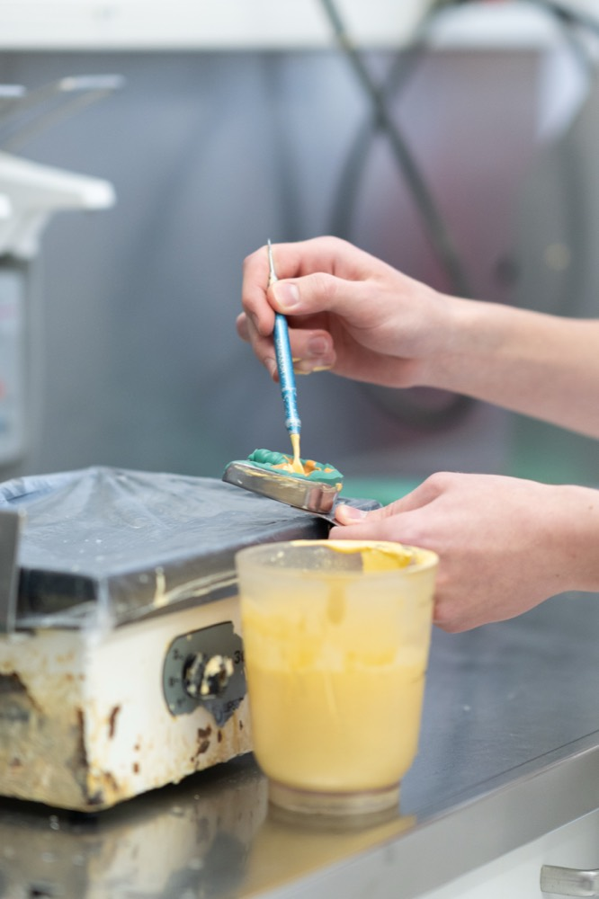
Eierschalenprovisorien, gefräste Provisorien und die Reiseprothese: schnelle, passgenaue Lösungen für die Übergangszeit. Zur Detailseite
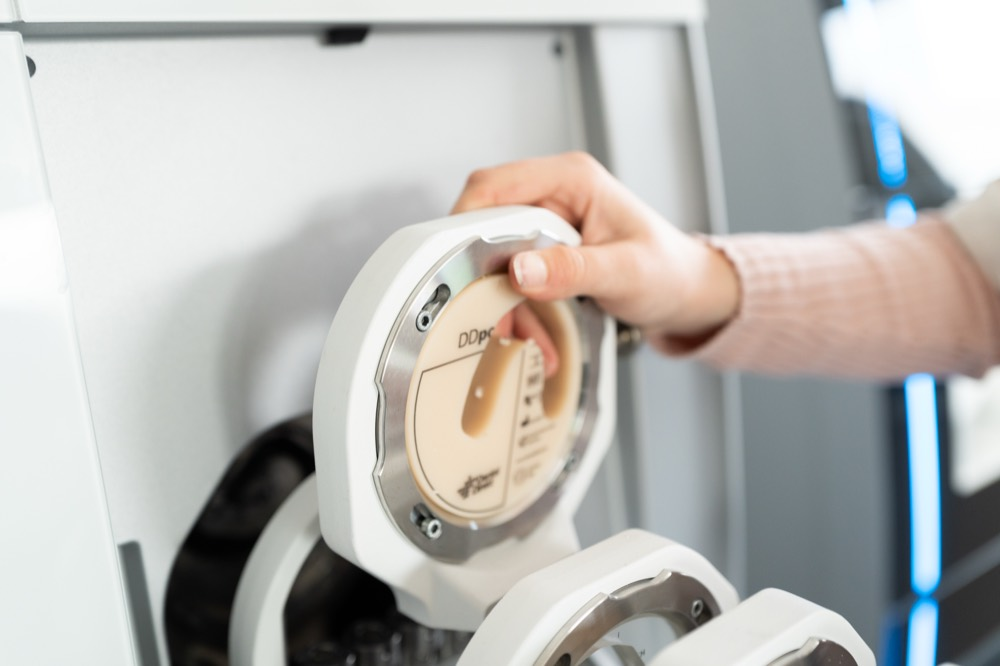
Reparaturen, Erweiterungen und Unterfütterungen, mit Expressservice und eigenem Fahrdienst. So bleibt Ihre Praxis handlungsfähig. Zur Detailseite
Seit fünf Jahrzehnten verbinden wir präzises Handwerk mit digitalen Fertigungsprozessen, persönlicher Beratung und einer termintreuen Arbeitsweise.
Moderne Prozesse und digitale Workflows für eine präzise Fertigung. Wir setzen auf Technologien, die sich im Alltag bewährt haben.
Sie sprechen direkt mit festen Ansprechpartnern, die Ihre Praxis, Ihre Wünsche und Ihre Abläufe kennen.
Persönliches Engagement, kurze Entscheidungswege und höchste Qualitätsansprüche, seit 1976.
Termintreue, kurze Kommunikationswege und ein flexibler Fahrdienst sorgen für reibungslose Abläufe im Praxisalltag.
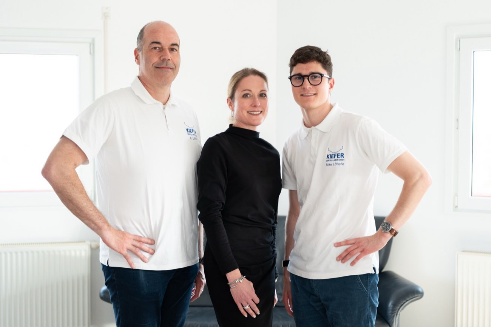
Hinter jeder Arbeit stehen 30 Kolleginnen und Kollegen, vom Azubi bis zum Meister. Sehr viele davon sind seit über zehn Jahren bei uns, einige sogar über zwanzig. Diese Erfahrung schmeckt man nicht, aber man sieht sie: in jeder Krone, jedem Teleskop, jeder Prothese.
Als absolutes Familienunternehmen setzen wir auf Zuverlässigkeit statt Hype: modern in der Technik, bodenständig im Umgang und immer erreichbar, wenn Ihre Praxis uns braucht.
Von der ersten Anfrage bis zur fertigen Arbeit begleiten wir Ihre Praxis persönlich, damit Sie sich auf Ihre Patienten konzentrieren können.
Wir lernen Ihre Praxis kennen und besprechen Ihre Anforderungen, persönlich und auf Augenhöhe.
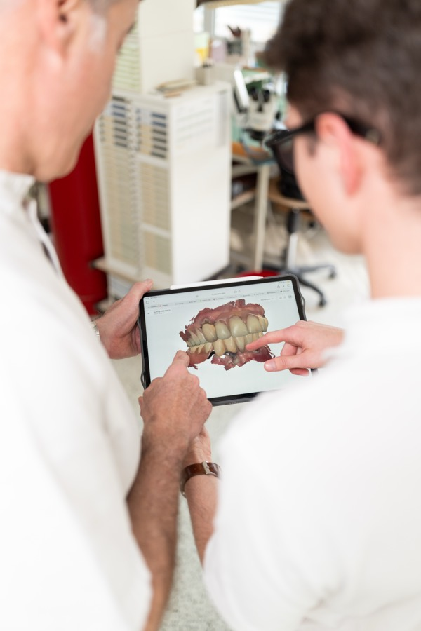
2Sie senden digitale Scandaten oder klassische Abformungen. Wir kümmern uns um den weiteren Ablauf.
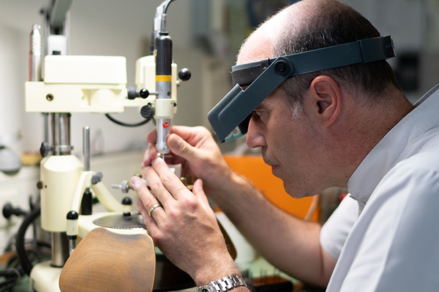
3Unsere Zahntechniker fertigen Ihre Arbeiten mit modernen CAD/CAM-Prozessen und jahrzehntelanger Erfahrung.
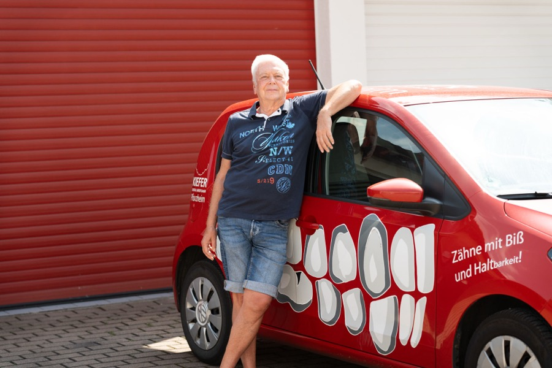
4Durch unseren Fahrdienst und abgestimmte Lieferzeiten erhalten Sie Ihre Arbeiten zuverlässig und termingerecht.
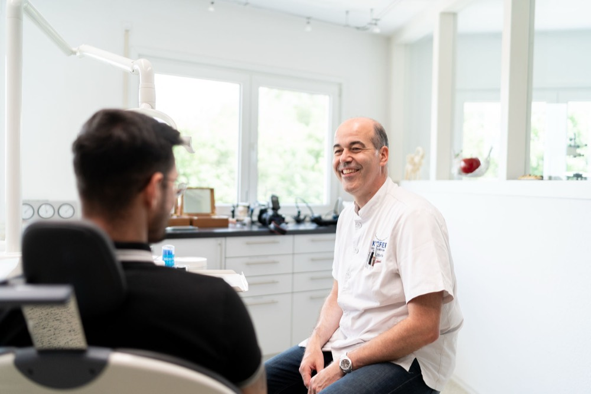
Wir arbeiten mit Einzelpraxen, Gemeinschaftspraxen, MVZ und oralchirurgischen Praxen zusammen. Unser Ziel: eine langfristige Zusammenarbeit mit festen Ansprechpartnern, kurzen Kommunikationswegen und hochwertigen zahntechnischen Lösungen.
Unser Fahrdienst bedient Praxen in Pforzheim, Karlsruhe, im Enzkreis und im Nordschwarzwald bis Freudenstadt. Darüber hinaus liefern wir deutschlandweit: von der Schweizer Grenze bis Berlin, nach Mönchengladbach und Leipzig.
Sie senden digitale Scandaten über Ihre Scanneranbindung oder klassische Abformungen. Unser Fahrdienst holt Arbeiten direkt in Ihrer Praxis ab, um den weiteren Ablauf kümmern wir uns.
Mit Einzelpraxen, Gemeinschaftspraxen, MVZ und oralchirurgischen Praxen, jeweils mit festen Ansprechpartnern und kurzen Kommunikationswegen.
Unser Fahrdienst fährt Pforzheim, Karlsruhe, den Enzkreis und den Nordschwarzwald bis Freudenstadt, flexibel abgestimmt auf die Abläufe Ihrer Praxis. Darüber hinaus liefern wir deutschlandweit: von der Schweizer Grenze bis Berlin, nach Mönchengladbach und Leipzig.
Auf den Friktionsverlust bei Teleskoparbeiten aus Nichtedelmetall geben wir 10 Jahre Garantie. Das ist in der Branche unüblich, und wir halten dieses Versprechen seit Jahren.
Dank durchgängig digitalem Workflow sind Teleskoparbeiten bei uns in zwei Sitzungen möglich. Auf den Friktionsverlust bei NEM-Teleskopen geben wir 10 Jahre Garantie.
Hochgold, NEM, Titan, PEEK, Zirkon, Multilayer und e.max: die volle Werkstoffbandbreite in einem Labor, vom Intraoralscan bis zum fertigen Werkstück.
Wir fertigen Implantatprothetik auf nahezu allen gängigen Implantatsystemen: Implantatkronen, Implantatbrücken, individuelle Abutments sowie verschraubte und zementierte Lösungen.
Reparaturen, Erweiterungen und Unterfütterungen erledigen wir mit kurzen Bearbeitungszeiten und Expressservice. Der Fahrdienst bringt die Arbeit direkt zurück in Ihre Praxis.
Erzählen Sie uns kurz, wer Sie sind und was Ihre Praxis braucht. Wir melden uns persönlich zurück.
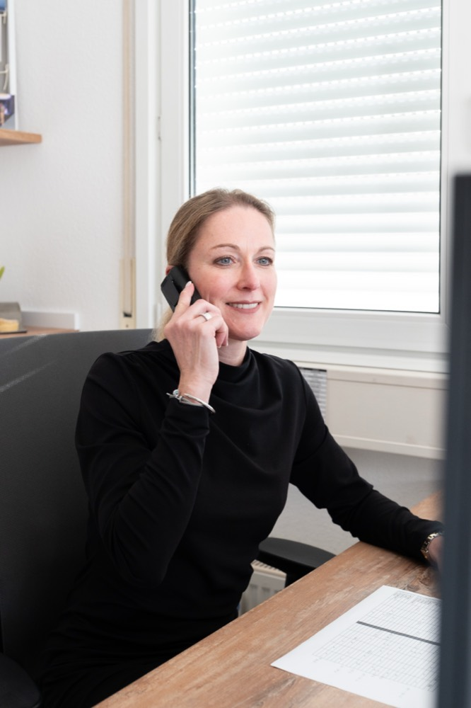
Ihre Anfrage ist fertig. Wir melden uns persönlich bei Ihnen.
Lernen Sie uns kennen: am Telefon, per Anfrage oder direkt bei uns im Labor. Wir zeigen Ihnen gerne, wie wir arbeiten.
Im Hummelacker 13 · 75180 Pforzheim-Büchenbronn · Mo–Do 8–18 Uhr, Fr 8–15 Uhr